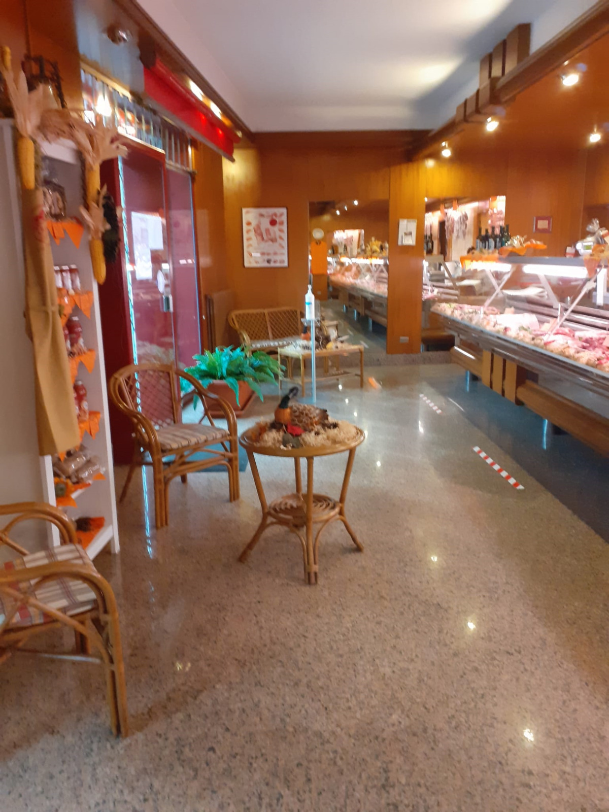
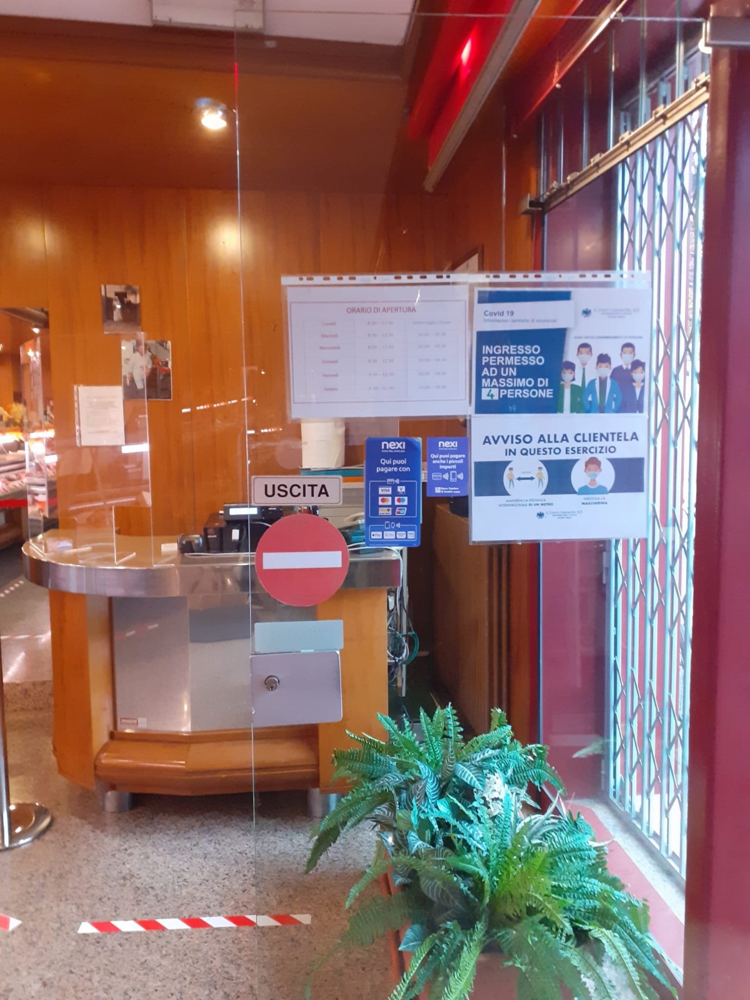
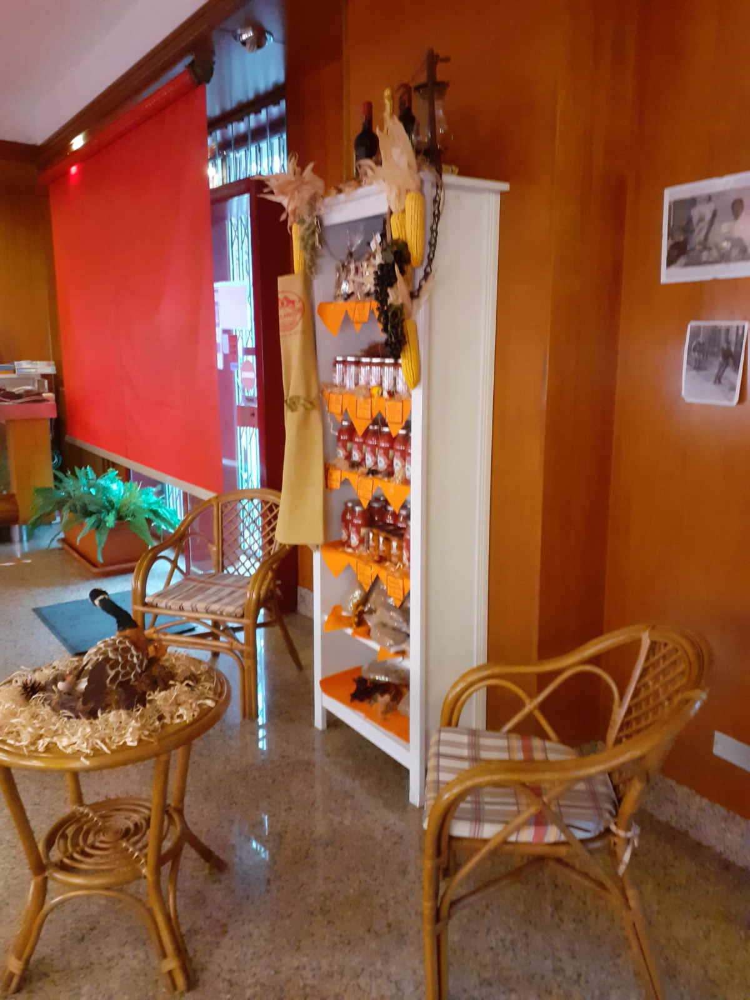

Nella nostra macelleria troverete solo carne allevata in italia e allevata umanamente
La parola d'ordine è qualità e sobrietà nella scelta dell'ambiente, ogni cliente deve sentirsi adagiato quando si trova nel locale
  La macelleria nasce nel 1962 grazie ad'Arturo Castelli. Arturo purtroppo viene a mancare e tutto rimane nelle mani di suo figlio Antonio che grazie al suo impegno e determinazione continua a fornire prodotti freschi e di qualità nelle tavole degli italiani
INDIRIZZO: Via Balilla, 15/17, 24058 Romano di Lombardia BG
TELEFONO: 0363910485
© La Carne Di Castelli Antonio